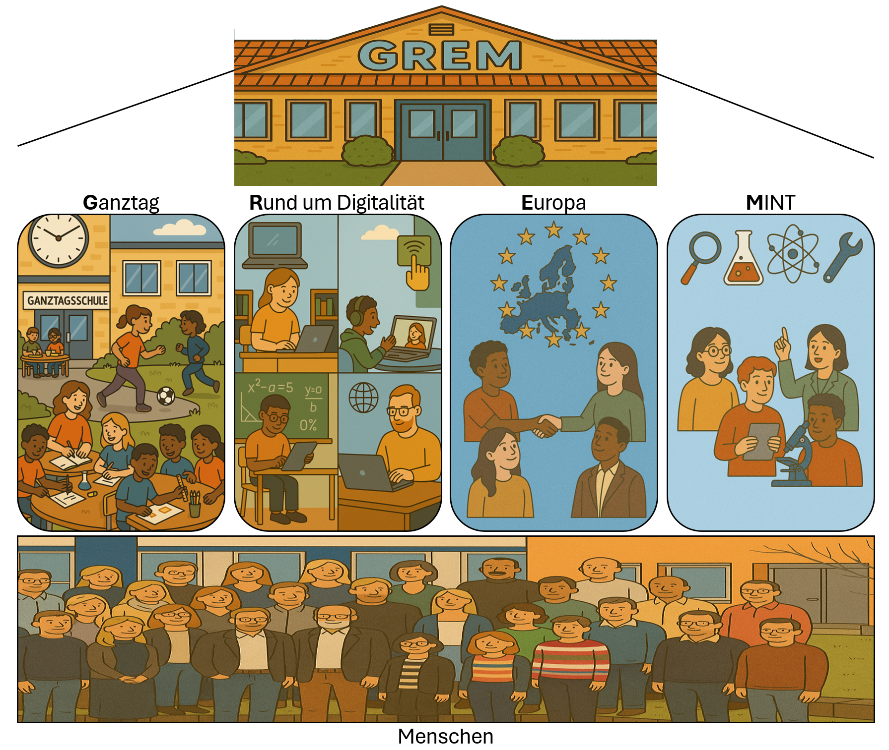
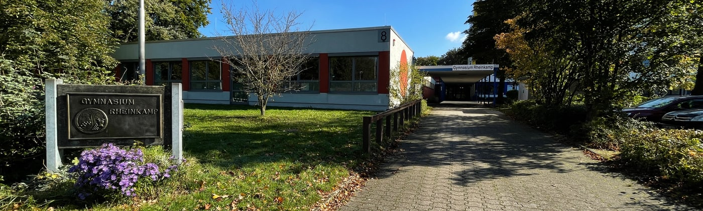
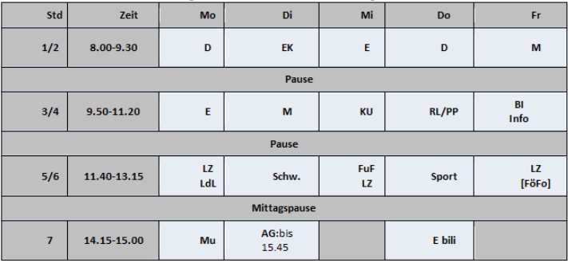
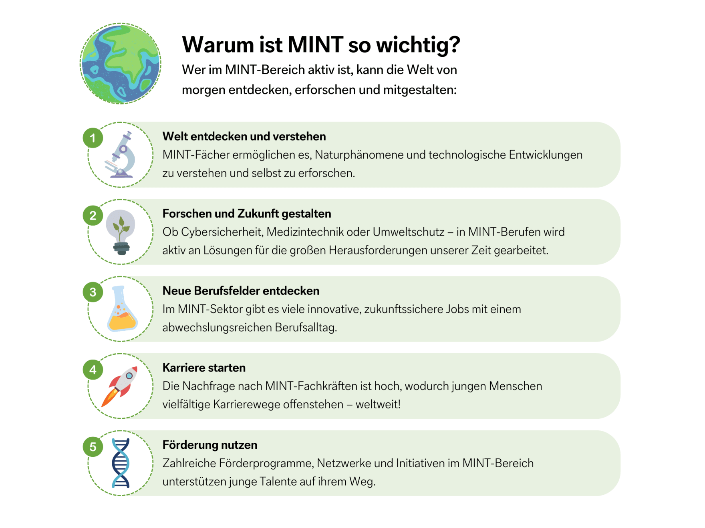

Das GREM
🏛️ Unsere vier Säulen

Unsere Schule versteht sich als ein Ort ganzheitlicher Bildung und Persönlichkeitsentwicklung – orientiert an den Herausforderungen und Chancen des 21. Jahrhunderts. Dabei stützt sich unser Schulkonzept auf vier tragende Säulen: Ganztag, Digitalität, Europa und MINT. Diese Leitbereiche strukturieren nicht nur unseren Schulalltag, sondern bilden den Rahmen für ein zukunftsorientiertes Lernen, das weit über die reine Wissensvermittlung hinausgeht.
Im Zentrum all unserer pädagogischen Bemühungen stehen die „21st Century Skills“, die als Grundlage unseres schulischen Handelns dienen. Dazu gehören unter anderem:
Kritisches Denken und Problemlösung
Kreativität und Innovation
Kommunikation und Zusammenarbeit
Medien-, Digital- und Informationskompetenz
Eigenverantwortliches Lernen
Soziale und interkulturelle Kompetenz
Diese Kompetenzen befähigen unsere Schülerinnen und Schüler dazu, in einer zunehmend komplexen, digitalen und globalisierten Welt aktiv und verantwortungsvoll zu handeln.
Als Ganztagsschule bieten wir weit mehr als Unterricht: Unsere vielfältigen Angebote zur Förderung von Interessen, Talenten und sozialer Kompetenz schaffen Räume für persönliche Entwicklung, Selbstverantwortung und sinnvolle Freizeitgestaltung. In einem strukturierten Tagesablauf entstehen vielfältige Lerngelegenheiten – im Klassenverband, in Projekten, Arbeitsgemeinschaften oder im individuellen Austausch.
Im Bereich Digitalität setzen wir auf zeitgemäße Bildung mit Weitblick. Unser Ziel ist es, unsere Schülerinnen und Schüler zu selbstbestimmten, reflektierten und kompetenten Akteurinnen und Akteuren der digitalen Welt zu machen. Dabei geht es nicht nur um Techniknutzung, sondern auch um Medienethik, Datensouveränität und ein bewusstes Verhältnis zu künstlicher Intelligenz.
Als zertifizierte Europaschule fördern wir Weltoffenheit, Toleranz und interkulturelles Lernen. Europa begreifen wir nicht nur als politischen Raum, sondern als kulturelles Projekt – getragen von den Werten der Aufklärung und des Humanismus. Begegnungsprogramme, Sprachenvielfalt und internationale Projekte machen europäische Bildung bei uns konkret erlebbar.
In der Säule MINT (Mathematik, Informatik, Naturwissenschaften, Technik) bieten wir praxisnahen und forschungsorientierten Unterricht – von der Unterstufe bis zur gymnasialen Oberstufe. Wettbewerbe, Experimente, Informatik ab Klasse 5 und Leistungskurse geben Raum für Neugier, Entdeckergeist und naturwissenschaftliches Denken.
Unser Schulprogramm ist Ausdruck eines klaren Anspruchs: Wir wollen Schülerinnen und Schüler stärken – fachlich, sozial und persönlich – damit sie die Zukunft aktiv mitgestalten können.
🏫 Ganztag
 Das GREM als Ganztagsschule – Mehr als nur Unterricht
🎯 Unser Ziel
Als Ganztagsgymnasium verbinden wir am GREM bereits seit mehr als zehn Jahren erfolgreich schulisches Lernen und individuelle Schülerinteressen.
Unser Ziel ist es, unseren Schüler*innen weitaus mehr als die reine Vermittlung von Wissen zu ermöglichen und sie im Rahmen unserer Angebote in ihrer Persönlichkeitsentwicklung zu fördern, sie zu sozialem und eigenverantwortlichem Handeln anzuleiten und bei der Entwicklung eines aktiven Freizeitverhaltens zu unterstützen.
🗓️ Struktur des Ganztages
Im Bildungsgang G9 bietet das GREM an drei Nachmittagen in der Woche ein Unterrichts-, Förder-, Forder- und Freizeitangebot an. Das im Stundenplan fest verankerte Doppelstundenprinzip überfrachtet auch lange Tage nicht, sondern schafft ausreichend Freiraum zum Lernen, Anwenden und Vertiefen.
In zusätzlichen Lernzeiten (LZ) am Vormittag, die in den Kernfächern durch unsere Fachkolleginnen begleitet werden, unterstützen wir die Schülerinnen weiter in ihrem individuellen Lernprozess. Ergänzend dazu ermöglichen das Fach „Lernen des Lernens“ (LdL), das genau wie das Fach Informatik (Info) bereits in Klasse 5 unterrichtet wird, die besonderen Förder- und Forderangebote in kleinen Lerngruppen (FuF, FöFo) sowie die freie Projektarbeit der „Cleverixe“, der Begabtenförderung ab Klasse 6, nachhaltige, individualisierte Lernangebote.
Die Mittagspause bietet ausreichend Raum zur freien Gestaltung: ob beim frisch zubereiteten Mittagessen in unserer gut ausgestatteten Mensa, beim Spielen und Bewegen im Freien oder unter der Anleitung älterer Schülerinnen (Sporthelfer), bei Ruhephasen im Raum der Stille oder beim gemeinsamen Spiel unterstützt durch die Spieleausleihe oder Kreativangebote (z.B. Basteln mit älteren Schülerinnen); hier ist genügend Zeit für Erholung.
🤝 Arbeitsgemeinschaften
Unsere AGs am Nachmittag überzeugen durch ihr breit gefächertes Angebot und werden den vielfältigen Schülerinteressen und Neigungen gerecht. Gemeinsam mit unseren außerschulischen Kooperationspartnern ist es uns gelungen, Angebote im musikalischen, sportlichen, künstlerischen und naturwissenschaftlichen Bereich anzubieten wie z. B. Theater (Young Soon), Tennis, Yoga, Künstlerisches Gestalten sowie Roboter und Garten.
🧾 Ganztag auf einen Blick
in Klasse 5 und 6: drei Ganztage bis 15:00 bzw. 15:45 Uhr und zwei „kurze Tage“
bei Bedarf: verlässliche Betreuung bis 15.45 Uhr auch an „kurzen Tagen“

🌍 Europa

Der europäische Gedanke ist eine der vier tragenden Säulen unseres Schulprofils am GREM. Als zertifizierte Europaschule des Ministeriums für Schule und Bildung des Landes Nordrhein-Westfalen ist es uns ein zentrales Anliegen, unsere Schülerinnen und Schüler in der Entwicklung interkultureller, sprachlicher und methodischer Kompetenzen zu stärken – Fähigkeiten, die für ein Leben in einem kulturell vielfältigen, demokratischen und vernetzten Europa unerlässlich sind.
🗣️ Bilingualer Bildungsgang – Sprachliche Vielfalt mit Tradition
Als Gymnasium mit einem bilingualen Bildungsgang beginnt der Ausbau sprachlicher Kompetenzen bereits in der Erprobungsstufe mit zusätzlichen Englischstunden. Diese bereiten unsere Schülerinnen und Schüler gezielt auf den bilingualen Fachunterricht in Erdkunde, Geschichte und Biologie ab der Mittelstufe vor.
Der bilinguale Zweig hat am GREM eine über 30-jährige Tradition und steht exemplarisch für die enge Verzahnung von sprachlichem und fachlichem Lernen. In der Oberstufe kann dieser Weg weitergeführt werden – mit der Möglichkeit, das Exzellenzlabel CertiLingua für mehrsprachige, europäische und internationale Kompetenzen zusätzlich zum Abitur zu erwerben.
🌐 Fremdsprachenangebot – Brücken bauen durch Sprache
Das GREM bietet ein breites Spektrum moderner Fremdsprachen an:
Französisch
Latein
Niederländisch
Italienisch
Mit diesem Sprachenangebot fördern wir nicht nur das Verständnis europäischer Kulturräume, sondern ermöglichen zugleich gezielte Perspektivenvielfalt für Studium, Beruf und internationale Begegnungen.
🤝 Europa im Ganztag – Projekte, AGs und gelebte Vielfalt
Auch im Rahmen unseres Ganztagskonzepts setzen wir klare europäische Akzente. Schülerinnen und Schüler erleben Europa aktiv in Kursen und AGs wie:
„Wir in Europa“
Erasmus+-AG,
Debating Club
Juniorbotschafter-Gruppe
Projektkurse mit internationaler Ausrichtung in der Sekundarstufe II.
So entstehen internationale Kontakte und Freundschaften, die über den Unterricht hinaus wirken und Europa im Schulalltag spür- und erfahrbar machen.
🌍 Austausch, Projekte & Wettbewerbe – Europa praktisch erleben
Durch unsere Teilnahme an Erasmus+-Programmen, Schüleraustauschen, internationalen Projektarbeiten und europäischen Wettbewerben wie z. B. dem Europäischen Wettbewerb oder Model European Parliament, werden Horizonte erweitert und globale Kompetenzen gefördert. Diese Erfahrungen stärken nicht nur die Sprachpraxis, sondern auch die soziale Verantwortung und Teamfähigkeit unserer Schülerinnen und Schüler.
🎓 Europäische Qualifikationen – Vorbereitung auf die Zukunft
Mit Blick auf Studium und Beruf bieten wir gezielte Zusatzqualifikationen an, etwa:
das bilinguale Zertifikat,
Sprachprüfungen wie DELF (Französisch), ele.IT (Italienisch), CNaVT (Niederländisch) und VPET (Englisch),
die CertiLingua-Auszeichnung.
Diese Abschlüsse erweitern den individuellen Bildungserfolg und sind bei Hochschulen und Arbeitgebern international anerkannt.
🏅 Ausgezeichnetes Engagement
Unser europäisches Engagement wurde mehrfach gewürdigt – das GREM trägt u. a. die Titel:
Europaschule
Erasmus+ Schule
Euregioprofilschule sowie
Botschafterschule des Europäischen Parlaments.
Diese Auszeichnungen spiegeln unser gelebtes Leitbild wider: Wir leben Europa – im Unterricht, im Schulleben und darüber hinaus.
💻 Rund um Digitalität

Digitalisierung und Künstliche Intelligenz (KI) sind längst nicht mehr nur Werkzeuge – sie sind eine tragende Säule des modernen Schullebens. Sie bereichern den Unterricht durch interaktive Methoden, ermöglichen individuelle Förderung und optimieren den Schulalltag durch intelligente Systeme. Ziel ist es, unsere Schülerinnen und Schüler mit zukunftsrelevanten Kompetenzen wie selbstständigem Lernen, kritischem Denken und reflektiertem Umgang mit Technologie auszustatten. Lebenslanges Lernen ist zur Realität geworden – und wir bereiten unsere Schüler darauf vor.
🧑🏫 Digitalisierung im Unterricht
Digitale Whiteboards, interaktive Plattformen und KI-gestützte Tools verändern die Unterrichtsgestaltung grundlegend. Lehrkräfte können durch Automatisierung (z. B. Korrekturhilfen) entlastet werden, während multimediale Inhalte das Lernen anschaulicher machen. So bleibt mehr Raum für pädagogische Betreuung und individuelle Unterstützung.
🤖 KI und Digitalisierung als Unterrichtsinhalt
Neben der Nutzung im Unterricht lernen Schüler in einer Unterrichtsreihe (Klasse 9/10) auch, wie KI funktioniert, welche ethischen Fragen sie aufwirft und wie man z. B. Fake News oder Deepfakes erkennt. Dabei arbeiten sie auch praktisch mit KI-Tools und reflektieren deren Einsatz im Alltag.
🏫 Digitalisierung im Schulalltag
Digitale Systeme erleichtern Verwaltung, Terminplanung und Ressourcennutzung. Eine zentrale Plattform für Lehrmaterialien und Aufgaben erleichtert die Organisation und kann durch KI sogar Lernpfade personalisieren oder Wissenslücken aufdecken.
💬 Kommunikation verbessern
Digitale Plattformen stärken die Kommunikation zwischen Lehrkräften, Eltern und Schülern. Eltern erhalten zeitnah Einblicke in den Lernfortschritt ihrer Kinder. Digitale Assistenten könntn künftig organisatorische Fragen beantworten. Digitale Sprechstunden und Konferenzen fördern den Austausch zusätzlich.
🚀 Bildung für eine digitale Zukunft
Unsere Schüler sollen nicht nur Anwender, sondern auch Gestalter der digitalen Welt werden. Daher fördern wir neben technischer Kompetenz auch ethisches Bewusstsein, Problemlösefähigkeit und kritisches Denken. Digitalisierung und KI sind integraler Bestandteil unserer Bildungsstrategie – nicht als Selbstzweck, sondern als Schlüssel zur aktiven, verantwortungsvollen Teilhabe an einer sich wandelnden Gesellschaft.
🧪 MINT
Unter dem Begriff „MINT-Fächer“ werden die Disziplinen Mathematik, Informatik, Naturwissenschaften und Technik zusammengefasst. Am GREM ist es uns ein besonderes Anliegen, unseren Schülerinnen und Schülern neben dem sprachlichen und musisch-künstlerischen Schwerpunkt (SOON) auch im MINT-Bereich ein attraktives und vielfältiges Angebot zu machen. MINT wird an unserer Schule in vielen Bereichen gelebt – vom Fach Informatik ab Klasse 5 über zahlreiche naturwissenschaftliche Wettbewerbe bis hin zu Leistungskursen in der Oberstufe. Im Folgenden stellen wir exemplarisch einige zentrale Säulen unseres MINT-Konzepts vor.

🧮 Sekundarstufe I
Bereits in der Sekundarstufe I haben unsere Schülerinnen und Schüler vielfältige Möglichkeiten, über den regulären Unterricht in Mathematik, Physik, Chemie, Biologie und Informatik hinaus eigene Interessen und Talente im MINT-Bereich zu entdecken und weiterzuentwickeln. Dazu zählen etwa Mathematikwettbewerbe (wie der Känguru-Wettbewerb oder die Mathe-Olympiade), die Robotics-AG (ab Klasse 5) sowie Projekte und Wettbewerbe wie Robot-Performance, RobotGame und die Science League in Kooperation mit dem MINT-Zentrum Duisburg (zdi). In diesen Bereichen konnte das GREM in den vergangenen Jahren immer wieder große Erfolge erzielen. Besondere Förderangebote richten sich an leistungsstärkere Schülerinnen und Schüler – beispielsweise im Rahmen der individuellen Förderung für unsere „Cleverixe“ oder durch die Teilnahme an Erasmusprojekten. Seit 2003 engagieren wir uns in internationalen Programmen wie Comenius oder Erasmus+, bei denen technische Themen auch grenzüberschreitend in Zusammenarbeit mit Partnerschulen realisiert werden. Zuletzt standen hier ökologische Fragestellungen und erneuerbare Energien im Mittelpunkt. Auch die Verbindung von MINT und Sprache wird bei uns gezielt gefördert: So findet in Jahrgangsstufe 8 bilingualer Biologieunterricht auf Englisch statt. Zudem können Schülerinnen und Schüler in den Jahrgangsstufen 9 und 10 im Wahlpflichtbereich II das interdisziplinäre Fach Natur und Technik wählen. Ein zukunftsweisendes Projekt ist der Aufbau des Creativ Studios – eines innovativen, multimedialen Lernraums. Hier sollen Schülerinnen und Schüler mit Audio-, Video- und Grafiksoftware arbeiten sowie Zugang zu CAD-Programmen, mehreren 3D-Druckern und VRTechnik erhalten. Ziel ist es, sie bestmöglich auf naturwissenschaftlich-technische Berufsfelder vorzubereiten. Darüber hinaus ist eine Kooperation mit der Hochschule Rhein-Waal in KampLintfort und dem dortigen FabLab – einem o,enen Labor für Schülerinnen und Schüler, Studierende und Start-ups – für die kommenden Jahre geplant.
🧬 Sekundarstufe II
In der Sekundarstufe II stehen neben Grund- und Leistungskursen in Mathematik, Biologie, Chemie und Physik auch bilinguale Angebote zur Verfügung: So kann Biologie weiterhin auf Englisch belegt werden, wodurch in der Mittelstufe erworbene Kompetenzen kontinuierlich bis zum Abitur ausgebaut werden können. Seit vielen Jahren bieten wir im MINT-Bereich ein breit gefächertes und qualitativ hochwertiges Angebot. Die Erfolge unserer Schülerinnen und Schüler bei Wettbewerben belegen regelmäßig das hohe Niveau: So stellte das GREM 2012 beispielsweise einen Preisträger im Bundeswettbewerb Jugend forscht im Fach Physik sowie mehrere Landessieger in Roboterwettbewerben des zdi.
🏆 GREM? Ausgezeichnet!
Seit 2015 ist das GREM offiziell MINT-EC-Schule (EC = Excellence) und wurde 2024 erfolgreich rezertifiziert. Diese Auszeichnung würdigt und bestätigt unsere Arbeit im MINT-Bereich. Als Teil des MINT-EC-Netzwerks erhalten wir Zugang zu exklusiven Förder- und Weiterbildungsangeboten für Schülerinnen, Schüler und Lehrkräfte. Darüber hinaus stellen wir unseren Abiturientinnen und Abiturienten neben dem Zeugnis der Allgemeinen Hochschulreife.